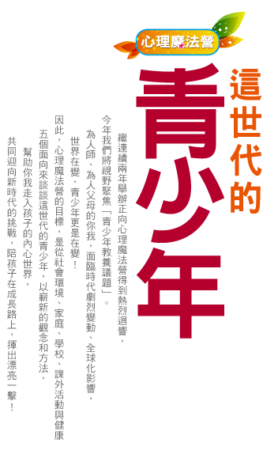

前二年的正向心理教養魔法營之後，今年度，我們將魔法營聚焦在「青少年的教養議題」，希望從大時代（社會環境）、家庭、學校、課外活動、生活世界，這五個面向來談談這世代的青少年，讓為人師、為人父母的我們，可以多一些認識、瞭解孩子的內心世界、並與他們一起面臨全球化後的世界。
1. 從五大面向來探討這世代的青少年教養，並找到自己的因材施教良方。
2. 本活動將提供一份教養風格量表，協助您認識自己與孩子的互動方式。

備註：主辦單位得保留課程內容及講師之變更權益
在傳統的社會裡，各種親職的知識和智慧是存在於「父母集合體」中。懷孕要注意什麼，沒有一個人會知道，但同時問問大家就知道了。同樣的，要怎麼照顧小孩，要怎麼處罰小孩，要怎麼幫助某一特殊狀況下的小孩，都是問問大家就知道了。這個大家，就是「父母集合體」。
然而，這個「父母集合體」隨著傳統社群或家族的消失而不見了。這一代的父母幾乎是第一代要自己負責養育小孩的父母，他們一切從頭學習，才發現有太多環環相扣的知識埋藏在裡頭。這領域的學習和理解，對我們整個社會而言還是不夠的，更不用講個別的父母。父母更是著急了。只是，驚慌或焦慮的父母，反而將小孩子拽得更緊，因而過度保護了。殊不知，新的問題在這樣的反應中又出現了——他們的保護，其實是剝奪了小孩透過探索而完成成長的唯一機會。 在這諸般因素影響下，一個晚熟的時代就這樣誕生了——年輕人覺得自己還沒準備好，而父母卻又不夠成熟。
陪伴孩子這十多年裡，我覺得身為父母最困難的挑戰，就是必須不斷地調整與孩子的互動模式，一、兩年對大人來說，真是一轉眼的事；可是對於不斷成長的孩子而言，卻有了非常大的變化，有時候以前有用的方法，也許很快就沒有用了，甚至還會適得其反。
教養最麻煩的是，沒有標準答案，別人有用的方法，用在自己孩子身上可能完全沒有效果，教養小孩似乎困難重重。即便如此，我們還是必須找到並且選擇與孩子共同成長的方式，而且清楚每個選擇的結果。
當父母能覺察自我狀態，並有能力檢視親子互動模式，將可大幅降低許多不避要的親子衝突；相對地，將重心放在改善家庭氣氛，反而較為務實。
狂飆期青少年愈受同儕團體的吸引，從家人身上獲得的歸屬感相對愈少，親子雙方終將變得疏離、欠缺信任感。因此，「關係的建立」才是引領孩子浪子回頭的關鍵。